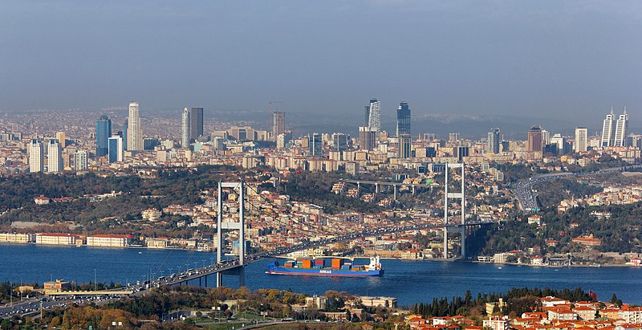

İstanbul Hakkında
İstanbul, hem Asya hem Avrupa kıtalarında yer alan, tarihi ve kültürel zenginlikleriyle öne çıkan bir metropoldür. Boğazı, sarayları ve renkli sokaklarıyla dünya çapında ziyaretçiler çeker.
Gezilecek Yerler
- Topkapı Sarayı
- Ayasofya Camii
- Sultanahmet Meydanı
- Galata Kulesi
- Kapalıçarşı
Turlar
İstanbul'da yapabileceğiniz aktiviteler ve turlar:
- Boğaz Turu
- Tarihi Yürüyş Turlari
- Sanat Galerisi Gezileri
- Kültür Turlari
Fiyat Bilgisi
İstanbul'da sunulan tur hizmetlerinin ortalama fiyatları:
- Boğaz Turu: 600 TL
- Tarihi Yürüyş Turlari: 400 TL
- Sanat Galerisi Gezileri: 350 TL
- Kültür Turlari: 450 TL